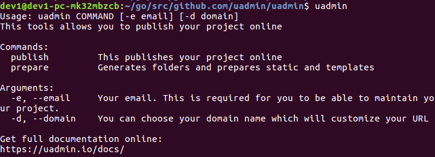

Simple Web Framework for Golang¶
uAdmin is a simple yet powerful web framework for building web applications.
Installation¶
Install uAdmin:
$ go get github.com/uadmin/uadmin/...
To check whether the installation is successful, use the keyword “uadmin” on your command prompt then press Enter.
$ uadmin
Expected output
Your First Project¶
Once you have uAdmin installed, let’s start a project.
$ mkdir -p ~/go/src/github.com/your_name/todo
$ cd ~/go/src/github.com/your_name/todo
Expected output

Use your favorite editor to create main.go inside that path. Put the following code in main.go:
package main
import (
"time"
"github.com/uadmin/uadmin"
)
// TODO model ...
type TODO struct {
uadmin.Model
Name string
Description string `uadmin:"html"`
TargetDate time.Time
Progress int `uadmin:"progress_bar"`
}
func main() {
uadmin.Register(TODO{})
uadmin.Port = 8000
uadmin.StartServer()
}
To run your code:
$ cd ~/go/src/github.com/your_name/todo
$ go build; ./todo
[ OK ] Initializing DB: [9/9]
[ OK ] Server Started: http://127.0.0.1:8000
Login form will pop up once you start the application. Set the username and password as “admin”.

Afterwards, the uAdmin dashboard will display on your screen. Let’s open the Todo model that you have created.

On the right side, click Add New Todo.

Fill up the remaining fields in the todo model.

Click Save on the bottom right of the screen afterwards to see the output.

Well done! You have created your first application.